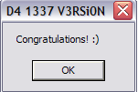

Analyse de PE : D4 1337 V3RSi0N de Kharneth - Solution d'elooo

Téléchargez la cible ici !!
| Niveau | Outils | Auteur |
|---|---|---|
| Avancé (une connaissance préalable du PE Header est plus que conseillée) | Un éditeur hexadécimal (pour les modifs) et mes propres tools : ShowPE et LogImports (dispo dans la section Coding) | elooo (ou appelez-la comme vous voulez... ex: "plus elooo" pour Epi, voire "++elooo++" depuis peu... (Ahah, non, ne me tape pas :D) |
Sommaire
- Introduction
- IMAGE_DOS_HEADER
- IMAGE_NT_HEADER
- IMAGE_FILE_HEADER
- IMAGE_OPTIONAL_HEADER
- IMAGE_DATA_DIRECTORY
- IMAGE_SECTION_HEADER
- Les différents IMAGE_IMPORT_DESCRIPTOR
- Greetz
Introduction
Ce défi est similaire a celui nommé "PE Analysis", la seule différence étant que la difficulté est beaucoup plus élevée (beaucoup plus de modifications à faire, sans compter que le binaire est organisé de manière "atypique").
Voici d'ailleurs ce qu'en dit l'auteur (coucou Kharneth :o)) :
En étudiant le Bugtraq#1, j'ai exécuté le virus par inadvertance et plusieurs de mes fichiers ont été corrompus! Je n'arrive pas à les réparer. S'il vous plait, aidez moi!! Le fichier est un simple petit programme dont certaines structures ont été modifiées. Le but est de retrouver un exécutable valide (Une MessageBox est affichée). [...blabla...] Pour ceux qui pensent connaitre le PE mieux que Matt Pietrek, D4 1337 V3RSi0N : Attention! Ici le PEHeader et l'ImportTable sont presque entièrement détruits! Comme pour l'autre exe, il ne faut pas toucher à sa structure. Juste modifier les membres qui doivent l'être. Le PE est façonné d'une certaine manière et j'aimerais qu'il reste ainsi! Le programme original fonctionnait parfaitement sous 2000 et XP (SP1 et SP2).
Et comme je me prends pour une 1337 depuis qu'Epi (coucou Epi ! :P) m'a appelée
"plus elooo" sur IRC, j'ai décidé de m'y attaquer...
Eheh :)
Et enfin : tout le long de l'étude, vous pourrez consulter le dump hexadecimal du binaire original via le fichier exporté dispo ICI.
Bon, fini le blabla, passons aux choses sérieuses !
Je tiens juste à rajouter que toutes les infos tirées de tools qui apparaîtront dans
ce tuto seront des logs de ce que me donneront mes deux esclaves : ShowPE et LogImports (ils sont serviables, efficaces et travailleurs, en plus ils ne me coutent pas chers, je ne vois
donc pas pourquoi j'utiliserais autre chose, hein ;))
IMAGE_DOS_HEADER
* 'MZ'+ 0x00 = e_magic (IMAGE_DOS_SIGNATURE (0x5a4d) * 'MZ'+ 0x02 = e_cblp (Bytes on last page of file) * 'MZ'+ 0x04 = e_cp (Pages in file) * 'MZ'+ 0x06 = e_crlc (Relocations) * 'MZ'+ 0x08 = e_cparhdr (Size of header in paragraphs) * 'MZ'+ 0x0a = e_minalloc (Minimum extra paragraphs needed) * 'MZ'+ 0x0c = e_maxalloc (Maximum extra paragraphs needed) * 'MZ'+ 0x0e = e_ss (Initial (relative) SS value) * 'MZ'+ 0x10 = e_sp (Initial SP value) * 'MZ'+ 0x12 = e_csum (Checksum) * 'MZ'+ 0x14 = e_ip (Initial (relative) CS value) * 'MZ'+ 0x16 = e_cs (Initial (relative) CS value) * 'MZ'+ 0x18 = e_lfarlc (File address of relocation table) * 'MZ'+ 0x1a = e_ovno (Overlay number) * 'MZ'+ 0x1c = e_res[4] (4 words réservés) * 'MZ'+ 0x24 = e_oemid (OEM identifier) * 'MZ'+ 0x26 = e_oeminfo (OEM information) * 'MZ'+ 0x28 = e_res2[10] ( 10 words réservés) * 'MZ'+ 0x3c = e_lfanew (offset 'PE', 0x4550)
On n'a pas l'habitude de trifouiller dans ce header en fait, et je dirais que de toutes façons pour un fichier PE, mais il y a quand même 2-3 choses importantes à savoir
Tout d'abord, je dirais qu'il y a deux valeurs à ne négliger sous aucun prétexte :
- e_magic
- e_lfanew
e_magic est toujours situé à l'offset 0 dans le fichier, et doit contenir la string "MZ"
e_lfanew est quant à lui situé à l'offset 0x3c, et dans le cas d'un fichier PE, il doit contenir
l'offset qui pointe sur la string "PE" dans le fichier.
Voyons voir ce que nous dit notre 1er esclave (le second finira le boulot lui, donc vous ne ferai connaissance avec lui que plus tard ;))
*****************************************************************
* ShowPE 1.2 *
* coded in asm 32 bits *
* by elooo *
*****************************************************************
-----> Log for : D4_1337_V3RSi0N.exe
_________________________________________________________________
_________________________________________________________________
IMAGE_DOS_HEADER
_________________________________________________________________
0X0 WORD e_magic : 0X5A4D
-----> IMAGE_DOS_SIGNATURE (MZ File, Win32)
0X2 WORD e_cblp : 0X0000
-----> Bytes on last page of file
0X4 WORD e_cp : 0X0000
-----> Pages in file
0X6 WORD e_crlc : 0X0000
-----> Relocations
0X8 WORD e_cparhdr : 0X0000
-----> Size of header in paragraphs
0XA WORD e_minalloc : 0X0000
-----> Minimum extra paragraphs needed
0XC WORD e_maxalloc : 0X0000
-----> Maximum extra paragraphs needed
0XE WORD e_ss : 0X0000
-----> Initial (relative) SS value
0X10 WORD e_sp : 0X0000
-----> Initial SP value
0X12 WORD e_csum : 0X0001
-----> Checksum
0X14 WORD e_ip : 0X3331
-----> Initial IP value
0X16 WORD e_cs : 0X3733
-----> Initial (relative) CS value
0X18 WORD e_lfarlc : 0X0000
-----> File address of relocation table
(must be set to 0x40 even if there is no relocation)
0X1A WORD e_ovno : 0X0000
-----> Overlay number
0X1C WORD e_res[4]
e_res[1] : 0X0000
e_res[2] : 0X0000
e_res[3] : 0X0000
e_res[4] : 0X0000
0X24 WORD e_oemid : 0X0000
-----> OEM identifier
0X26 WORD e_oeminfo : 0X0000
-----> OEM information
0X28 WORD e_res2[10]
e_res2[1] : 0X0000
e_res2[2] : 0X0000
e_res2[3] : 0X0000
e_res2[4] : 0X0000
e_res2[5] : 0X0000
e_res2[6] : 0X0000
e_res2[7] : 0X01C0
e_res2[8] : 0X0000
e_res2[9] : 0X0000
e_res2[10] : 0X0000
0X3C DWORD e_lfanew : 0X00000000
-----> Offset of the PE Signature
_________________________________________________________________
_________________________________________________________________
IMAGE_NT_HEADER
_________________________________________________________________
0X0 DWORD Signature : 0X00005A4D
It is not a valid PE File !
e_magic contient bien la valeur attendue, par contre on constate que ce n'est pas le cas de e_lfanew. En effet, il pointe sur l'offset 0, autrement dit sur la string "MZ", et mon ShowPE est suffisamment instruit pour reconnaître que ce n'est pas la signature correcte d'un fichier PE :)
Si on regarde dans le dump hexa on constate qu'il n'y a pas de string "PE", donc les choses vont se corser un peu puisqu'il va falloir la placer nous même, afin d'ensuite pouvoir faire pointer e_lfanew au bon endroit.
On pourrait penser que de toutes façons on ne pourra pas placer "PE" avant les 64 premiers bytes puisqu'ils sont utilisés par le DOS Header (les bytes suivants sont ensuite normalement utilisés par le MS-DOS Stub qui est optionnel et qui sert normalement à afficher "This program cannot be run...", mais là il paraît évident que Kharneth l'a délibéremment supprimé), et c'est d'ailleurs sur cette optique que je suis partie au tout début, mais en fait on s'aperçoit vite que ce ne va pas être possible de faire comme ça, car on va manquer de place (flemme de détailler ça, je vais vous demander de l'admettre hein :p Ou si vous êtes curieux, faites vos propres tests, et vous pourrez confirmer ;))
Bref, j'ai décidé d'analyser plus précisemment les valeurs qui étaient déjà en place dans ce MS Header pour essayer de voir si je pouvais en déduire des choses
On voit 4 valeurs autre que "MZ" déjà en place :
0X12 WORD e_csum : 0X0001
-----> Checksum
0X14 WORD e_ip : 0X3331
-----> Initial IP value
0X16 WORD e_cs : 0X3733
-----> Initial (relative) CS value
e_res2[7] : 0X01C0
les valeurs 0X3331 et 0X3733 m'apparaissent d'emblée être des valeurs "à la con", mais
rien ne me permet de l'affirmer pour le moment.
On pourrait supposer que 0X0001 serait le nombre de section du binaire (en voyant
uniquement .code dans le dump hexa ça serait plausible, mais là encore on n'est sûr de
rien...), par contre si on émet l'hypothèse que c'est effectivement le nombre de sections,
les deux valeurs à la con correspondraient "TimeDateStamp", champs qui sert à pas grand
chose de réellement utile, donc... pourquoi pas :).
Mais ce qui m'a surtout intrigué c'est le 0X01C0 dans un champs réservé...
SI on va voir dans le dump hexa à l'offset 0X01C0, on s'aperçoit que ça ressemble
fortement à un début de code... tiens tiens :p Et si 0X01C0 était notre entrypoint ?
Je suis partie avec cette idée en tête en étant très sûre de moi, parce que si on considère
0X01C0 comme l'entrypoint, le 0X0001 correspond aussi au nombre de section, bref tout collait !
Pour pouvoir déterminer où on va placer notre string "PE", il va falloir s'interesser un peu plus à l'header suivant :
'PE'+4 = début IMAGE_FILE_HEADER donc : * 'PE'+0x04 = Machine * 'PE'+0x06 = NumberOfSections * 'PE'+0x08 = TimeDateStamp * 'PE'+0x0c = PointerToSymbolTable * 'PE'+0x10 = NumberOfSymbols * 'PE'+0x14 = SizeOfOptionalHeader * 'PE'+0x16 = Characteristics
A partir de mes notes rédigées il y a quelques mois, on s'aperçoit que le champs
"NumberOfSections" se situe à "PE"+6, ça tombe bien, c'est exactement ce que je cherchais à savoir ;)
Ici le 0X0001 est à l'offset 0X12, ce qui signifie donc que notre string "PE" va devoir être placée à
0X12 - 6 = 0X0C :)
Et une fois "PE" écrit à l'offset 0X0C on voit ensuite pouvoir mettre e_lfanew à 0X0C aussi !
Donc on fait nos modifs et j'imagine qu'ensuite, on pourra passer à la suite !
IMAGE_NT_HEADER
e_res2[9] : 0X0000
e_res2[10] : 0X0000
0X3C DWORD e_lfanew : 0X0000000C
-----> Offset of the PE Signature
_________________________________________________________________
_________________________________________________________________
IMAGE_NT_HEADER
_________________________________________________________________
0XC DWORD Signature : 0X00004550
-----> PE File
0X10 IMAGE_FILE_HEADER
0X24 IMAGE_OPTIONAL_HEADER
_________________________________________________________________
Pas grand chose à dire ici : après avoir fait nos modifs sus-citées, cette fois ShowPE reconnaît bien la signature spécifique au fichier PE et nous autorise donc à analyser les reste.
IMAGE_FILE_HEADER
_________________________________________________________________
IMAGE_FILE_HEADER
_________________________________________________________________
0X10 WORD Machine : 0X0000
-----> Unknown !
0X12 WORD NumberOfSections : 0X0001
-----> 1 sections
0X14 DWORD TimeDateStamp : 0X37333331
0X18 DWORD PointerToSymbolTable : 0X00000000
0X1C DWORD NumberOfSymbols : 0X00000000
0X20 WORD SizeOfOptionalHeader : 0X0000
0X22 WORD Characteristics : 0X0000
-----> Non-32-bit-word machine
-----> Big endian
-----> Contains base relocations
-----> COFF line numbers haven't been removed
-----> COFF symbol table entries for local symbols haven't been removed
-----> Debugging information not removed from image file
-----> Removable media : not needed to copy and run from swap file.
-----> Network : not needed to copy and run from swap file.
-----> Runs on MP or UP machine
-----> Normally trim working set
-----> Object/library file
-----> Not a system file
-----> File is not a DLL
_________________________________________________________________
_________________________________________________________________
IMAGE_OPTIONAL_HEADER
_________________________________________________________________
0X24 WORD Magic : 0X0000
Les champs qu'on avaient prédis précedemment sont bien au bon endroit, donc pas
de surprise de ce côté là :)
Par contre on a tout le reste à renseigner... Ou tout du moins pour les valeurs les
plus courantes et indispensables :
- Machine
- SizeOfOptionalHeader
- Characteristics
Je ne vais pas détailler, et on peut facilement trouver des infos sur le net, mais
pour un fichier destiné à un CPU Intel 80386 au minimum, "Machine" devra être à 0X014C.
Comme j'assemble beaucoup de sources asm en 386 aussi, je vais pas m'ennuyer, je vais lui donner
cette valeur.
"SizeOfOptionalHeader" correspond à l'offset de la string relative au nom de la
première section - l'offset du début de l'IMAGE_OPTIONAL_HEADER.
".code" est à l'offset 0X9C et l'IMAGE_OPTIONAL_HEADER débute en 0X24, donc
"SizeOfOptionalHeader" = 0X9C - 0X24 = 0X78.
"Characteristics" est un champs relatif aux caractéristiques du fichier : est-ce que c'est
un fichier système ou pas, une dll ou pas, Big Endian ou Little Endian, 32 bits ou non, etc
Là encore on peut trouver pas mal d'infos là-dessus sur le net en cherchant un peu.
Ce qu'il faut surtout retenir c'est que pour un fichier executable .exe 32 bits (pas une dll), non fichier système,
on trouvera la quasi totalité du temps 0X010F en "Characteristics" donc là encore, on ne va pas
pousser l'investigation plus loin, et on se contentera de ça.
Après modifications, on obtient donc :
_________________________________________________________________
IMAGE_FILE_HEADER
_________________________________________________________________
0X10 WORD Machine : 0X014C
-----> Build for Intel 80386 processor
0X12 WORD NumberOfSections : 0X0001
-----> 1 sections
0X14 DWORD TimeDateStamp : 0X37333331
0X18 DWORD PointerToSymbolTable : 0X00000000
0X1C DWORD NumberOfSymbols : 0X00000000
0X20 WORD SizeOfOptionalHeader : 0X0078
-----> Size of optional header: 120 bytes
0X22 WORD Characteristics : 0X010F
-----> 32-bit-word machine
-----> Big endian
-----> Must be loaded at its preferred base address
-----> COFF line numbers have been removed
-----> COFF symbol table entries for local symbols have been removed
-----> Debugging information not removed from image file
-----> Removable media : not needed to copy and run from swap file.
-----> Network : not needed to copy and run from swap file.
-----> Runs on MP or UP machine
-----> Normally trim working set
-----> Executable file
-----> Not a system file
-----> File is not a DLL
_________________________________________________________________
IMAGE_OPTIONAL_HEADER
_________________________________________________________________
IMAGE_OPTIONAL_HEADER
_________________________________________________________________
0X24 WORD Magic : 0X0000
0X26 BYTE MajorLinkerVersion : 0X00
0X27 BYTE MinorLinkerVersion : 0X00
0X28 DWORD SizeOfCode : 0X00000000
0X2C DWORD SizeOfInitializedData : 0X00000000
0X30 DWORD SizeOfUninitializedData : 0X00000000
0X34 DWORD AddressOfEntryPoint : 0X000001C0
-----> Execution starts at 0x000001c0 (RVA) or at 0x000001c0 (VA)
0X38 DWORD BaseOfCode : 0X00000000
-----> RVA to the executable code : 0x00000000
0X3C DWORD BaseOfData : 0X0000000C
-----> RVA to the initialized data : 0x0000000c
0X40 DWORD ImageBase : 0X00000000
-----> Preferred load base is 0x00000000
0X44 DWORD SectionAlignment : 0X00000000
0X48 DWORD FileAlignment : 0X00000000
-----> Sections aligned to 0 bytes in RAM, 0 bytes in file
0X4C WORD MajorOperatingSystemVersion : 0X0000
0X4E WORD MinorOperatingSystemVersion : 0X0000
0X50 WORD MajorImageVersion : 0X0000
0X52 WORD MinorImageVersion : 0X0000
0X54 WORD MajorSubsystemVersion : 0X0000
0X56 WORD MinorSubsystemVersion : 0X0000
-----> Versions: NT 0.0, Win32 0.0, App 0.0
0X58 DWORD Win32VersionValue : 0X00000000
0X5C DWORD SizeOfImage : 0X00000000
-----> Size of image in RAM: 0 bytes
0X60 DWORD SizeOfHeaders : 0X00000000
-----> Size of headers / offset to the 1st section in file: 0x0
0X64 DWORD CheckSum : 0X00000000
-----> Checksum: 0x00000000
0X68 WORD Subsystem : 0X0000
-----> Subsystem unknown !
0X6A WORD DllCharacteristics : 0X0000
0X6C DWORD SizeOfStackReserve : 0X00000000
0X70 DWORD SizeOfStackCommit : 0X00000000
0X74 DWORD SizeOfHeapReserve : 0X00000000
0X78 DWORD SizeOfHeapCommit : 0X00000000
0X7C DWORD LoaderFlags : 0X00000000
0X80 DWORD NumberOfRvaAndSizes : 0X00000000
-----> Number of valid entries in the IMAGE_DATA_DIRECTORY : 0
0X84 IMAGE_DATA_DIRECTORY
_________________________________________________________________
Alors en ce qui concerne les valeurs non déjà renseignées, et qui sont plus ou moins importantes pour la bonne execution du programme, on trouve :
- Magic
- ImageBase
- SectionAlignment
- FileAlignment
- MajorOperatingSystemVersion
- MinorOperatingSystemVersion
- MajorImageVersion
- MinorImageVersion
- MajorSubsystemVersion
- MinorSubsystemVersion
- SizeOfImage
- SizeOfHeaders
- Subsystem
- SizeOfStackReserve
- SizeOfStackCommit
- SizeOfHeapReserve
- SizeOfHeapCommit
- NumberOfRvaAndSizes
Bref y'a du boulot là :)
"Magic" pourrait prendre deux valeurs différentes, celle de IMAGE_NT_OPTIONAL_HDR_MAGIC ou celle de IMAGE_ROM_OPTIONAL_HDR_MAGIC. Ici on est en présence d'un fichier executable, on choisira donc la première suggestion, qui a pour valeur 0X10B
"ImageBase" est l'adresse "préférable" du premier byte de l'image du fichier quand elle sera chargée en mémoire.
Ca sera forcément un multiple de 64 KBytes (par défaut les exe sont loadés à 0X00400000 et les dll à 0X01000000).
Le seul moyen de savoir ici si cette "ImageBase" est standard ou pas est de regarder dans le dump hexa
si on voit des "call VA" ("VA" = Virtual Address), chose que nous allons faire d'ailleurs.
Si on n'a aucun "call VA" dans le code du binaire, on pourra mettre la valeur standard sinon on sera obligé de
s'adapter à celle spécifiée dans le code.
Sans chercher trop longtemps, on aperçoit :
6800109A02 6810109A02 ou encore : FF1574109A02
Si on connaît ne serait-ce que les opcodes de base, on voit facilement ce que c'est :
"68" correspond à un "push" et "FF15" est un "call [VA]", ces trois bouts de code cités ci-dessus
correspondent donc à :
push 029A1000 push 029A1010 call [029A1074]
Si on regarde juste un peu (pas longtemps :p) dans les headers suivants, on voit :
_________________________________________________________________
IMAGE_SECTION_HEADER
_________________________________________________________________
SECTION
0X9C Name : .code
0XA4 DWORD VirtualSize : 0X0000009A
0XA8 DWORD VirtualAddress : 0X00001000
0XAC DWORD SizeOfRawData : 0X0000009A
0XB0 DWORD PointerToRawData : 0X00000200
Ce qui signifie en gros que la section .code débute à la Relative Virtual Address 0X1000
et qu'elle a pour taille 0X9A bytes.
Si on regarde à nouveau ce qu'on a souligné au-dessus, on voit que dans le code, il manipule
des VA du type 029A1xxx. On peut facilement hypothéser que ce sont des VA comprises dans la section
.code, autrement dit, pour obtenir l'ImageBase, on soustrait la RVA de la section code à ces VA :
0X029A1xxxx - 0X00001000 = 0X029A0xxxx
Notre ImageBase est donc 0X029A0000.
"SectionAlignment" est l'alignement des sections en mémoire. Ici la RVA de la section .code est de 1000, on en déduit donc que la valeur de "SectionAlignment est de 0X1000 aussi.
"FileAlignment" est l'alignement des sections en raw. L'offset du début de la section .code (PointerToRawData) est à 0X200 donc la valeur de "FileAlignment" sera de 0X200.
"MajorOperatingSystemVersion"/"MinorOperatingSystemVersion", "MajorImageVersion"/"MinorImageVersion",
"MajorSubsystemVersion"/"MinorSubsystemVersion" : en fait on pourrait très bien laisser le 3eme et le 4eme champs
à 0 et mettre l'OperatingSystemVersion à 1, par contre pour le SubsystemVersion j'ai toujours 4.0...
J'ai fait les choses proprement et je suis allée fouinée dans le binaire "PE Analysis" de Kharneth et j'ai
vu qu'il était spécifié "NT 4.0, Win32 4.0, App 4.0", donc on va suivre le même schéma :p
Donc on met MajorOperatingSystemVersion à 4, MinorOperatingSystemVersion à 0, MajorImageVersion à 4, MinorImageVersion à 0,
MajorSubsystemVersion à 4 et MinorSubsystemVersion à 0.
"SizeOfImage" correspond à la RVA de la 1ère section + la VirtualSize de la dernière section (qui est aussi notre première section ici, puisqu'il n'y en a qu'une dans le binaire), ce qui nous donne 0X1000 + 0X9A = 0X109A.
"SizeOfHeaders" correspond typiquement à l'offset du début de la première section dans le fichier, soit 0X200 dans notre cas.
"Subsystem" détermine quel type de binaire c'est : si c'est une application console, ou une application GUI par exemple.
On pourrait hésiter entre mettre 2 (Windows GUI) ou 3 (Windows Console) mais on a vu que dans PE Analysis on était en
présence d'une Windows GUI, donc j'imagine que c'est le cas ici aussi. On va le mettre à 2.
"SizeOfStackReserve", "SizeOfStackCommit", "SizeOfHeapReserve", "SizeOfHeapCommit" sont des valeurs qui correspondent
respectivement à la stack réservée puis allouée, et l'heap réservée puis allouée.
Pour les valeurs réservées, elles ont pour coutumes d'être à 0X00100000 donc je vais pas être contrariante, et pour ce
qui est effectivement alloué, ben c'est un tout petit binaire, 0X00001000 devrait suffir (c'est d'ailleurs ce qui était
spécifié pour le binaire PE Analysis aussi).
"NumberOfRvaAndSizes" est par défaut à 0X10 parce qu'il y a 16 IMAGE_DIRECTORY_ENTRY différentes par défaut.
Par contre ici il va falloir réfléchir un peu, parce qu'on voit que ce n'est pas possible...
Explications : l'IMAGE_SECTION_HEADER commence en 0X9C (offset du nom de la 1ere section) et l'IMAGE_DATA_DIRECTORY est en 0X84.
Si on déduit 0X84 de 0X9C, il nous reste donc 0X18 bytes pour placer nos différentes IMAGE_DIRECTORY_ENTRY.
Et chaque IMAGE_DIRECTORY_ENTRY prend 8 bytes, c'est à dire qu'au maximum, on ne pourra en placer que 3 (0X8 * 3 = 0X18).
Ce qui nous donne après toutes ces modifications :
_________________________________________________________________
IMAGE_OPTIONAL_HEADER
_________________________________________________________________
0X24 WORD Magic : 0X010B
0X26 BYTE MajorLinkerVersion : 0X00
0X27 BYTE MinorLinkerVersion : 0X00
0X28 DWORD SizeOfCode : 0X00000000
0X2C DWORD SizeOfInitializedData : 0X00000000
0X30 DWORD SizeOfUninitializedData : 0X00000000
0X34 DWORD AddressOfEntryPoint : 0X000001C0
-----> Execution starts at 0x000001c0 (RVA) or at 0x029a01c0 (VA)
0X38 DWORD BaseOfCode : 0X00000000
-----> RVA to the executable code : 0x00000000
0X3C DWORD BaseOfData : 0X0000000C
-----> RVA to the initialized data : 0x0000000c
0X40 DWORD ImageBase : 0X029A0000
-----> Preferred load base is 0x029a0000
0X44 DWORD SectionAlignment : 0X00001000
0X48 DWORD FileAlignment : 0X00000200
-----> Sections aligned to 4096 bytes in RAM, 512 bytes in file
0X4C WORD MajorOperatingSystemVersion : 0X0004
0X4E WORD MinorOperatingSystemVersion : 0X0000
0X50 WORD MajorImageVersion : 0X0004
0X52 WORD MinorImageVersion : 0X0000
0X54 WORD MajorSubsystemVersion : 0X0004
0X56 WORD MinorSubsystemVersion : 0X0000
-----> Versions: NT 4.0, Win32 4.0, App 4.0
0X58 DWORD Win32VersionValue : 0X00000000
0X5C DWORD SizeOfImage : 0X0000109A
-----> Size of image in RAM: 4250 bytes
0X60 DWORD SizeOfHeaders : 0X00000200
-----> Size of headers / offset to the 1st section in file: 0x200
0X64 DWORD CheckSum : 0X00000000
-----> Checksum: 0x00000000
0X68 WORD Subsystem : 0X0002
-----> Uses Windows GUI subsystem
0X6A WORD DllCharacteristics : 0X0000
0X6C DWORD SizeOfStackReserve : 0X00100000
-----> Size of reserved stack : 1048576 bytes
0X70 DWORD SizeOfStackCommit : 0X00001000
-----> Size of initially committed stack : 4096 bytes
0X74 DWORD SizeOfHeapReserve : 0X00100000
-----> Size of the reserved heap : 1048576 bytes
0X78 DWORD SizeOfHeapCommit : 0X00001000
-----> Size of the committed heap : 4096 bytes
0X7C DWORD LoaderFlags : 0X00000000
0X80 DWORD NumberOfRvaAndSizes : 0X00000003
-----> Number of valid entries in the IMAGE_DATA_DIRECTORY : 3
0X84 IMAGE_DATA_DIRECTORY
_________________________________________________________________
IMAGE_DATA_DIRECTORY
_________________________________________________________________
IMAGE_DATA_DIRECTORY
_________________________________________________________________
IMAGE_DIRECTORY_ENTRY_EXPORT
0X84 DWORD VirtualAddress : 0X00000000
0X88 DWORD Size : 0X00000000
IMAGE_DIRECTORY_ENTRY_IMPORT
0X8C DWORD VirtualAddress : 0X00000000
0X90 DWORD Size : 0X00000000
IMAGE_DIRECTORY_ENTRY_RESOURCE
0X94 DWORD VirtualAddress : 0X00000000
0X98 DWORD Size : 0X00000000
_________________________________________________________________
A noter que le binaire ici ne contient pas du tout de ressource, donc si Kharneth avait voulu réduire encore la taille de son binaire, il aurait pu ne mettre que 2 IMAGE_DIRECTORY_ENTRY (l'IMAGE_DIRECTORY_ENTRY_IMPORT étant quant à elle nécessaire, d'ailleurs il va falloir, pour cette raison, remplir ses deux champs).
La valeur que prendra "Size" on s'en moque un peu. A vrai dire, même lorsqu'elle
est mal renseignée, ça fonctionne toujours. Vous pouvez même la laisser à 0 si vous voulez ;).
En ce qui me concerne, je lui ai donné 0X3C, autrement dit la taille correcte, car si on regarde
dans le dump hexa, on voit qu'il y a deux dll importées :
- kernel32.dll
- user32.dll
Pour chaque dll importée, on aura une IMAGE_IMPORT_DESCRIPTOR de 0X14 bytes (on verra ça tout à l'heure) suivies de 5 dwords nuls, soit 0X14 * 3 = 0X3C.
Pour la "VirtualAddress" c'est différent, là on n'a pas le droit à l'erreur :)
Il va donc falloir déterminer où on va devoir/pouvoir/vouloir (? :p) mettre l'IAT.
Si on regarde dans le dump hexa, on voit, comme ça a été souligné tout à l'heure :
FF1574109A02 FF156C109A02
Ce qui correspond - dans un langage à peine plus évolué - à :
call [029A1074] call [029A106C]
Et ces call [VA] ressemblent typiquement à des call [API] :), d'ailleurs ça tombe bien, on en a que deux dans le code, et on n'a aussi que deux API dans le prog (ExitProcess et MessageBoxA).
Donc on note déja qu'en 0X106C (soit à l'offset 0X26C) on aura la RVA de l'Hint de la 1ere api (soit 0X118) , et qu'en 0X1074 (offset 0X274), on aura la RVA de l'Hint de la 2eme api (0X126).
Ici les hints sont à 0, mais on s'en fout car les api son importées par leur nom, ils deviennent donc optionnels (ils servent par contre en cas d'imports par ordinal).
On a vu au-dessus qu'on avait besoin de 0X3C bytes au minimum pour caser notre IAT.
Si on la place en dehors d'une section (autrement dit avant la section .code), Windows ne va pas
apprécier puisqu'il n'arrivera pas à résoudre ce qu'il prendra comme une VA (alors qu'on lui aura
déjà donné l'offset, ce qui se trouve avant la section code n'étant pas loadé à une adresse virtuelle
différente).
Enfin bref, après l'offset 0X274, on n'a pas assez de place, par contre avant l'offset 0X26C, on
a suffisamment de place :)
J'ai choisi pour début d'IAT l'offset 0X230 (donc on mettra en VirtualAddress 0X1030) parce que c'est un
nombre rond, et puis ça me laisse suffisamment de bytes disponibles pour caser mes trois IMAGE_IMPORT_DESCRIPTOR.
On a donc à ce stade :
_________________________________________________________________
IMAGE_DATA_DIRECTORY
_________________________________________________________________
IMAGE_DIRECTORY_ENTRY_EXPORT
0X84 DWORD VirtualAddress : 0X00000000
0X88 DWORD Size : 0X00000000
IMAGE_DIRECTORY_ENTRY_IMPORT
0X8C DWORD VirtualAddress : 0X00001030
0X90 DWORD Size : 0X0000003C
IMAGE_DIRECTORY_ENTRY_RESOURCE
0X94 DWORD VirtualAddress : 0X00000000
0X98 DWORD Size : 0X00000000
_________________________________________________________________
IMAGE_SECTION_HEADER
_________________________________________________________________
IMAGE_SECTION_HEADER
_________________________________________________________________
SECTION
0X9C Name : .code
0XA4 DWORD VirtualSize : 0X0000009A
0XA8 DWORD VirtualAddress : 0X00001000
0XAC DWORD SizeOfRawData : 0X0000009A
0XB0 DWORD PointerToRawData : 0X00000200
0XB4 DWORD PointerToRelocations : 0X00000000
0XB8 DWORD PointerToLinenumbers : 0X00000000
0XBC WORD NumberOfRelocations : 0X0000
0XBE WORD NumberOfLinenumbers : 0X0000
0XC0 DWORD Characteristics : 0XE0000020
-----> Contains executable code
-----> Executable as code
-----> Readable
-----> Writeable
_________________________________________________________________
Ben là ça va être du rapide puisque tout le nécessaire semble déjà renseigné :)
Merci Kharneth :o)
Les différents IMAGE_IMPORT_DESCRIPTOR
C'est donc à ce stade que vous allez pouvoir faire connaissance avec mon deuxième esclave (eheh).
Je le fais travailler un peu et voilà ce qu'il me dit :
********************************************************
* LogImports 1.1 *
* coded in asm 32 bits *
* by elooo *
********************************************************
-----> Log for : D4_1337_V3RSi0N.exe
_______________________________________________________
IMAGE_DOS_SIGNATURE (MZ) at : 0x00000000
IMAGE_NT_SIGNATURE (PE) at : 0x0000000c
FileHeader at : 0x00000010
OptionalHeader at : 0x00000024
Number of sections : 1
RVA of the Import Directory : 0x00001030
Length of the Import Directory : 0x0000003c
Section .code
RVA = 0x00001000
Offset = 0x00000200
Length = 0x0000009a
(Section of Import Table !)
Hum pas grand chose de plus que son collègue...
Le fait est qu'il ne voit aucun IMAGE_IMPORT_DESCRIPTOR, et pour cause, puisqu'on n'en a
pas renseigné un seul !
On a donc choisi que notre IAT commencerait en 0X230, autrement dit que l'OriginalFirstThunk
du premier IMAGE_IMPORT_DESCRIPTOR serait en 0X230.
Le schéma de la structure s'impose je pense :
typedef struct _IMAGE_IMPORT_DESCRIPTOR {
union {
DWORD Characteristics; // 0 for terminating null import descriptor
DWORD OriginalFirstThunk; // RVA to original unbound IAT (PIMAGE_THUNK_DATA)
};
DWORD TimeDateStamp; // 0 if not bound,
// -1 if bound, and real date\time stamp
// in IMAGE_DIRECTORY_ENTRY_BOUND_IMPORT (new BIND)
// O.W. date/time stamp of DLL bound to (Old BIND)
DWORD ForwarderChain; // -1 if no forwarders
DWORD Name;
DWORD FirstThunk; // RVA to IAT (if bound this IAT has actual addresses)
} IMAGE_IMPORT_DESCRIPTOR;
typedef IMAGE_IMPORT_DESCRIPTOR UNALIGNED *PIMAGE_IMPORT_DESCRIPTOR;
Les champs réellement nécessaires pour chaque IMAGE_IMPORT_DESCRIPTOR sont :
- Name
- FirstThunk
Dans mon binaire rebuildé, j'ai également renseigné les champs "OriginalFirstThunk" mais c'était
optionnel ici puisqu'il n'y a pas d'Unbound Table (du coup les valeurs de mes "OriginalFirstThunk"
correspondent aux valeurs de mes "FirstThunk".
Le fait est que lorsqu'il n'y a pas d'Unbound Table, si les "OriginalFirstThunk" sont nuls ou erronés,
ce sont les "FirstThunk" qui sont lus. Evidemment si les "FirstThunk" sont faux aussi, là y'aura
problème :)
"Name" se situe sur le 4eme dword de chaque IMAGE_IMPORT_DESCRIPTOR, autrement dit pour la 1ere dll
(kernel32.dll), l'offset à renseigner pour "Name" sera en 0X23C (0X230 + 3 * 4).
Le 2eme IMAGE_IMPORT_DESCRIPTOR commencant en 0X244 (0X230 + 5 * 4), le champs "Name" pour la 2eme dll
(user32.dll) aura pour offset 0X250 (0X244 + 3 * 4).
Et le 3eme IMAGE_IMPORT_DESCRIPTOR, qui lui contiendra 5 dwords nuls, commencera en 0X258 (0X244 + 5 * 4)
Le champs "Name" c'est tout simplement l'offset qui pointe sur le nom de la dll.
Pour le 1er IMAGE_IMPORT_DESCRIPTOR, ce sera donc 0X100 et pour le 2eme ce sera 0X10D.
Le "FirstThunk" occupe le dword juste après celui utilisé par "Name", et correspond à la RVA de la RVA de la
1ere api de la dll donnée, contenue dans l'IAT.
Je sais pas si je suis très claire, mais je vois pas comment expliquer plus "clairement" justement :p
Pour le 1er IMAGE_IMPORT_DESCRIPTOR, ça sera donc 0X106C et pour le 2eme IMAGE_IMPORT_DESCRIPTOR ce sera 0X1074.
A ce stade, tout le nécessaire a du être renseigné, donc on refait travailler un coup notre esclave :
_______________________________________________________
IMAGE_DOS_SIGNATURE (MZ) at : 0x00000000
IMAGE_NT_SIGNATURE (PE) at : 0x0000000c
FileHeader at : 0x00000010
OptionalHeader at : 0x00000024
Number of sections : 1
RVA of the Import Directory : 0x00001030
Length of the Import Directory : 0x0000003c
Section .code
RVA = 0x00001000
Offset = 0x00000200
Length = 0x0000009a
(Section of Import Table !)
_______________________________________________________
IMAGE_IMPORT_DESCRIPTOR
_______________________________________________________
OriginalFirstThunk : 0x0000106c ; offset = 0x0000026c
TimeDateStamp : 0x00000000
ForwarderChain : 0x00000000
Name : 0x00000100 ; offset = 0x00000100
FirstThunk : 0x0000106c ; offset = 0x0000026c
-----> KERNEL32.DLL
-------------------------------------------------------
Hint | Name
-------------------------------------------------------
0 | ExitProcess
_______________________________________________________
_______________________________________________________
IMAGE_IMPORT_DESCRIPTOR
_______________________________________________________
OriginalFirstThunk : 0x00001074 ; offset = 0x00000274
TimeDateStamp : 0x00000000
ForwarderChain : 0x00000000
Name : 0x0000010d ; offset = 0x0000010d
FirstThunk : 0x00001074 ; offset = 0x00000274
-----> USER32.DLL
-------------------------------------------------------
Hint | Name
-------------------------------------------------------
0 | MessageBoxA
_______________________________________________________
Ca me paraît bon tout ça !
On execute le fichier pour voir si on en s'est vraiment pas trompé :

Nickel ! Notre travail s'achève donc ici :)
Pour ceux qui veulent voir à quoi ressemble le binaire fonctionnel, il est dispo LA.
Greetz
Je sens que ça va être du rapide, car là je commence à en avoir sacrément marre d'écrire...
- à Analyst, ainsi qu'à Kharneth pour ce défi très sympathique.
- à tous les autres qui veulent :p Et un coucou particulier à Epi que j'ai osé taquiner ici (m'en veux pas, c'est pas méchant tu sais :))
- Et mince, je voulais parler du code du binaire, et j'ai oublié... Ce qu'il faut retenir en gros : Kharneth fait une encryption xor avec une clef de 0xFF (donc sur un octet) des strings qui vont servir de caption et de texte pour la MessageBox. Voilou, c'est tout :p
Cordialement,
elooo.